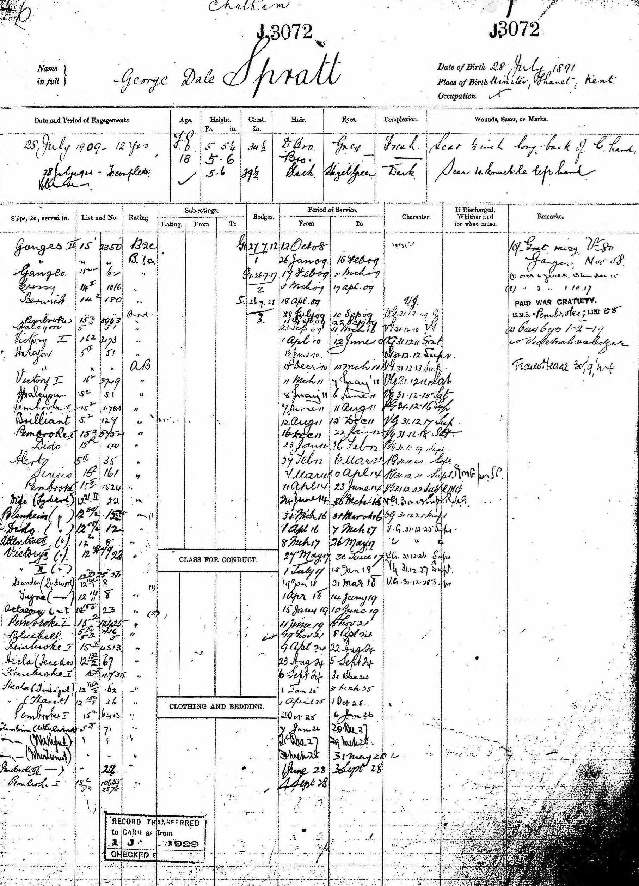

George Dale Spratt 1891 - c1960
[ Home ] | [ Calendar ] | [ Surnames Index ] | [ Errors ] | [ Family History ]A road sweeper and the child of John Spratt (an agricultural labourer) and Sophia Dale, George Spratt, the great-uncle of Nigel Horne, was born in St Nicholas-at-Wade, Kent, England on 28 Jul 18911,2,3,4,5, was baptised there on 23 Aug 1891 and married Prudence Coles (with whom he had 1 child, Prudence M) in Thanet, Kent, England around Nov 19247.
During his life, he was living at 2 Nash Court Cottage, Nash Road, Margate, Kent on 31 Mar 190110 - less than a mile from his sister May Spratt who was living at 2 Nash Court Cottage, Nash Road, Margate, Kent; and at 4 St John's Road, Margate, Kent on 29 Sept 19392, in 19539 and in 19558. He served in the navy from 12 Oct 1908 to 4 Sept 1928 (Royal Navy).
He died c. Feb 1960 in Thanet3,6.
Parents
- John was born on 26 Mar 1852
- Sophia was born on 15 Nov 1853
Children
- Prudence M was born on 5 Nov 1925
Citations
- 1901 England Census Online publication - Provo, UT, USA: The Generations Network, Inc., 2005.Original data - Census Returns of England and Wales, 1901. Kew, Surrey, England: The National Archives of the UK (TNA): Public Record Office (PRO), 1901. Data imaged from the National
- 1939 Register - Findmypast (was the head of the household)
- England & Wales, Death Index: 1984-2005 Online publication - Provo, UT, USA: The Generations Network, Inc., 2007.Original data - General Register Office. England and Wales Civil Registration Indexes. London, England: General Register Office. © Crown copyright. Published by permission of the Cont
- England & Wales, FreeBMD Birth Index, 1837-1915 Online publication - Provo, UT, USA: The Generations Network, Inc., 2006.Original data - General Register Office. England and Wales Civil Registration Indexes. London, England: General Register Office. © Crown copyright. Published by permission of the Cont
- UK, Royal Navy Registers of Seamen's Services, 1900-1928 Ancestry.com Operations, Inc.
- England & Wales deaths 1837-2007 - Findmypast
- England & Wales, Marriage Index: 1916-2005 Online publication - Provo, UT, USA: The Generations Network, Inc., 2009.Original data - General Register Office. England and Wales Civil Registration Indexes. London, England: General Register Office. © Crown copyright. Published by permission of the Cont
- 1955 Kelly's Thanet Directory
- 1953 Kelly's Thanet Directory
- 1901 England, Wales & Scotland Census - Findmypast (was age 9 and the son of the head of the household)
Media
George Dale Spratt - Naval Record

1955 Kelly's Thanet Directory

1953 Kelly's Thanet Directory

England & Wales marriages 1837-2008 - BMD/M/1924/4/AZ/001097/103
England & Wales births 1837-2006 - BMD/B/1891/3/AZ/000535/328
Kent, Canterbury Archdeaconry baptisms 1538-1912 - GBPRS/CANT/B/96802369
1911 England, Wales & Scotland Census Transcription - GBC-1911-RG14-05590-0015-27
British Royal Navy Seamen 1899-1924 Transcription - GBM-ADM188-134971
England & Wales deaths 1837-2007 - BMD/D/1960/1/AZ/001109/086
1939 Register - TNA/R39/1755/1755D/014/25
England, Births & Baptisms 1538-1975 Transcription - R_884660337
England, Births & Baptisms 1538-1975 Transcription - R_884948253
Family Tree

Map
Generated by ged2site. Last updated on Jul 3, 2024
Known Issues
Location for the event between 12 Oct 1908 and 4 Sep 1928 is empty